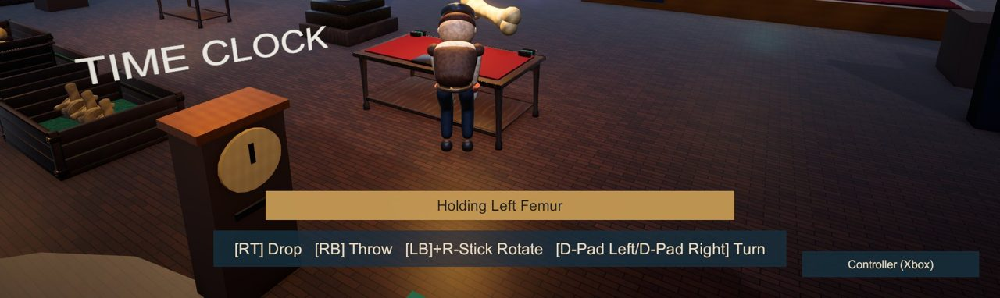
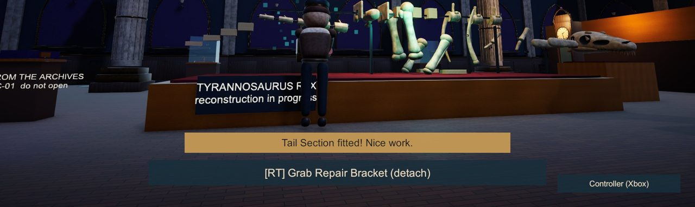
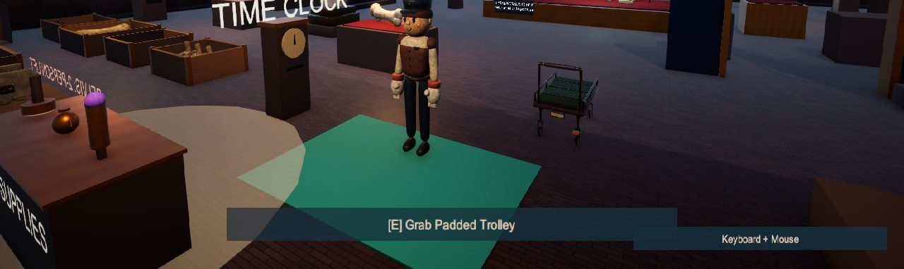

A cooperative game about the night staff at a haunted museum. Working title. Pre-alpha, unlaunched. Started November 17, 2026.
How to read the status labels
Built means the code exists. Tested locally means automated tests passed on a development machine, not on a shared build server. Checked on the private preview means it was checked on a hosted copy that the public cannot reach. Run on my own device means I ran it myself on my own hardware. Planned means designed but not built or not switched on.
What it is
A cooperative 3D comedy game, working title Night Shift. Players are the night staff at a haunted museum. They have to repair and rebuild damaged exhibits before the morning inspection while supernatural events get in the way.
It is designed for 1 to 6 players. The idea is that players physically depend on each other, for example by carrying heavy objects together, and that problems are funny and recoverable instead of punishing.
It is pre-alpha and unlaunched. The first commit was November 17, 2026. Only a Windows build exists and it has not been released to anyone.

Carrying a piece to the exhibit. The prompts change with the input device: this frame shows a controller. Cropped screenshot from a local development build.
145
Automated tests passing locally, Nov 19, 2026
~45,400
Lines of C# game code
162
Test methods in the project
2
Players verified together, on local test runs
Test count: 72 logic tests plus 73 tests that run inside real game scenes. That full run is from Nov 19, 2026. Newer work on the current branch is still in testing and includes failing runs, so I am not claiming a full pass for the latest code.
What is built, tested, and still planned
Area
Status
Third-person movement and camera, with controller and keyboard and mouse support and remappable controls
Built, tested locally
Grabbing, rotating, throwing, and placing physics objects, with snap-into-place assembly
Built, tested locally
Two players carrying a heavy object together, with an assist so a solo player is never blocked
Built, tested locally
One complete round: clock in, work orders, rebuild a 15-piece exhibit, timed inspection, grade, reset for the next round
Built, tested locally
Disruptive supernatural events with ways to counter and recover from them
Built, tested locally
Accessibility options for camera shake and reduced motion
Built, tested locally
Two-player networked play, with the host deciding outcomes
Built, tested locally with two copies of the game and added network delay
A larger multi-room level and new mission types
Built, not fully verified. Recent test runs include failures
3 to 6 players, online services, matchmaking
Planned. Not tested
More content, long-term progression, final character design, release
Planned

The exhibit partway through a rebuild. Cropped screenshot from a local development build. The art is in early look-development and is not final.
Engineering problems solved
One winner when two players grab the same object. In multiplayer the host is the authority on what happened. When two players grab the same object at the same moment, exactly one wins, and late or duplicate messages are ignored safely. This was checked by running two copies of the game against each other with 60 milliseconds of added delay.
Carrying heavy objects together without jitter. Heavy objects need more than one player. A solo player gets an assist so they are never stuck, and a carry with too few players degrades gracefully instead of breaking.
Chaos that can be replayed. The disruptive events come from a seeded system, so the same seed replays the same sequence of decisions. That makes chaotic gameplay testable and makes bugs reproducible.
Failure that players can recover from. Lost or thrown objects return home, wrong placements are flagged and reversible, and running out of time gives a grade instead of leaving the round stuck.
Tooling that keeps "it compiled" from being reported as "it works". A custom test runner, a network log analyzer, and a record of lessons from past failures that is consulted before retrying a failed approach. A run that finds zero tests counts as a failure, not a pass.

Part of the hall: storage, the time clock, and a trolley for moving pieces. Cropped screenshot from a local development build.
How the work is run
The roadmap is split into milestones. Each one has written pass criteria and needs named evidence before it counts as passed.
There are two test suites: one for rules and logic, and one that runs inside real game scenes, including long repeated grab, carry, attach, and throw cycles.
Networked play is tested by a scripted two-copy scenario and a script that analyzes the logs.
Game, art, and audio work happen on separate branches and are merged through reviewed change requests.
3D assets are produced by scripted Blender pipelines so they can be rebuilt the same way each time.
Limits
Unlaunched. No public build, no store page, and no outside playtesting.
Only two players have been verified together, on local test runs. 3 to 6 players is designed, not tested.
There is no online service or matchmaking. Play is one player hosting and another joining.
Windows only. No console work has been done.
The art is in early look-development and the character design is not final.
The full test pass is from Nov 19, 2026. Newer work includes failing runs.
The automated checks on the shared build server do not run the game's tests, so every test figure here is a local run.
My role and how AI was used
I am the owner and final decision maker on this project. I set the requirements, decided what to build and in what order, set the rules for testing and evidence, reviewed the results, and approved every release.
The code was written by AI coding assistants working under my direction and review. I am describing that plainly because it is how the work was done. On the main line of development, 236 of 324 commits carry an AI coding assistant co-author line.
Stack
Unity 6 with the Universal Render Pipeline, C#, Unity Netcode for GameObjects, Unity Test Framework, Python and PowerShell tooling, Blender.